Journal
Approved application · approved logoEvery image below is an actual canonical PNG. Open an image for its full resolution. These are authored design scenes, not current-app browser captures.
A slower start
journal-populatedActions and implementation pointers
+ New page · Journal · Explore · All pages · ⌄ · Reflections · › · Reading · Entries · Timeline · Today · Turn into a page · Explore this note · Ask Journl · Today’s Journal · Close · Instant · Thinking
apps/web/src/app/(app)/journal/_components/journal-list.tsxapps/web/src/app/(app)/journal/_components/journal-entry-convert-to-page.tsx

SHA256 8bf07d560729376aa5ea9438f66f7229a0ef590fbb564db9ef9234bf3ee664ad

SHA256 6030f8cb98154f800f02090c0d512d7ab30f031eee17b96180e12db506db4f75

SHA256 61d22de4867935205ca890f9d5963f91c0ffd023b1cfd8b87c305bc8ca566bbb

SHA256 8365f1495b6fc5b5dd7eb3b314da69be19b810b82c0c9ceef39d9ec37005f1bc

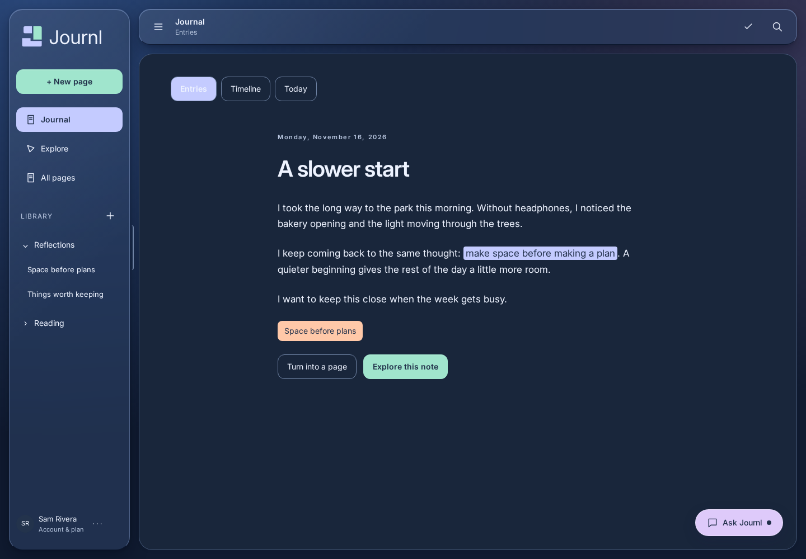
SHA256 1a301ad121062ff3abf17d7fc36df24a0def2377f17342ce19741e016c74427d

SHA256 a3debd585c51161facc0fb54f0446fb998b0ff3ccb055482c4da062f3314ff33

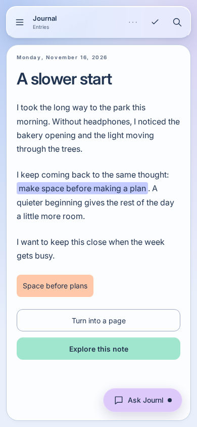
SHA256 fcd144c95ccf9bcd6dc2695d284dce65b54f15582cde2baf301ee72ea88d5ade

SHA256 37a854fd08d4241b8c65763f00832107d661db864dab89f40bb83897ea41aa8d
A little room for today
journal-emptyActions and implementation pointers
+ New page · Journal · Explore · All pages · ⌄ · Reflections · › · Reading · Ask Journl · Today’s Journal · Close · Instant · Thinking
apps/web/src/app/(app)/journal/_components/journal-list.tsxapps/web/src/app/(app)/journal/_components/journal-entry-convert-to-page.tsx

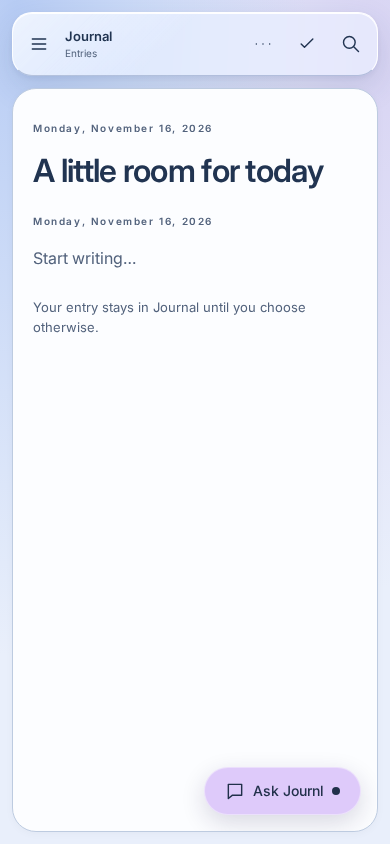
SHA256 6e8d5b9bd3683345b569ec934a85bb38e3b70b5e1824ad5d9d6e7b126fd1cd2f

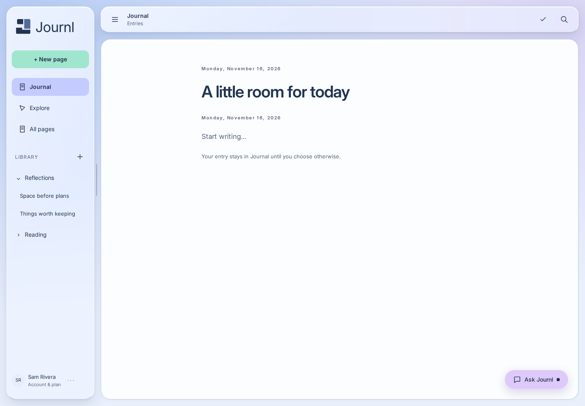
SHA256 46f57fa568bebc0326f0ff7646d9dae546cc5a6b03d4e5cd880438b6e609d169

SHA256 17bc62f2bd2a6e13dee318ee47fc411a990d8a34f605fcd171fdfaa72ec2d8a7

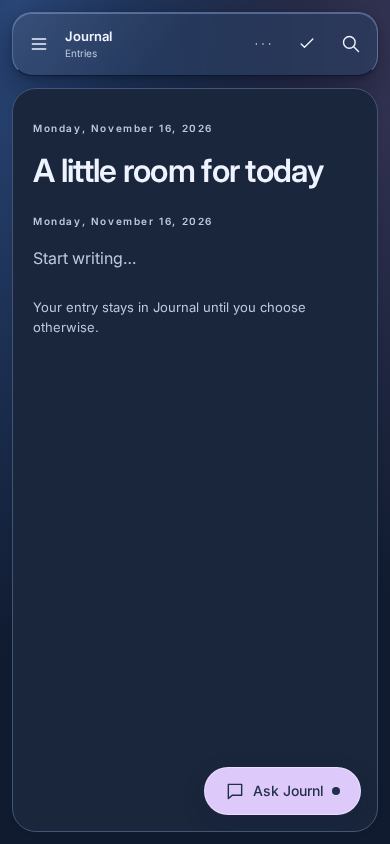
SHA256 9d0bb49deebb25bd784cda682086d71349338890ea9595ccd87e965b3529f7d6
Your days, in context
journal-timelineActions and implementation pointers
+ New page · Journal · Explore · All pages · ⌄ · Reflections · › · Reading · Entries · Timeline · Today · Open entry · Ask Journl · Today’s Journal · Close · Instant · Thinking
apps/web/src/app/(app)/journal/_components/journal-list.tsxapps/web/src/app/(app)/journal/_components/journal-entry-convert-to-page.tsx

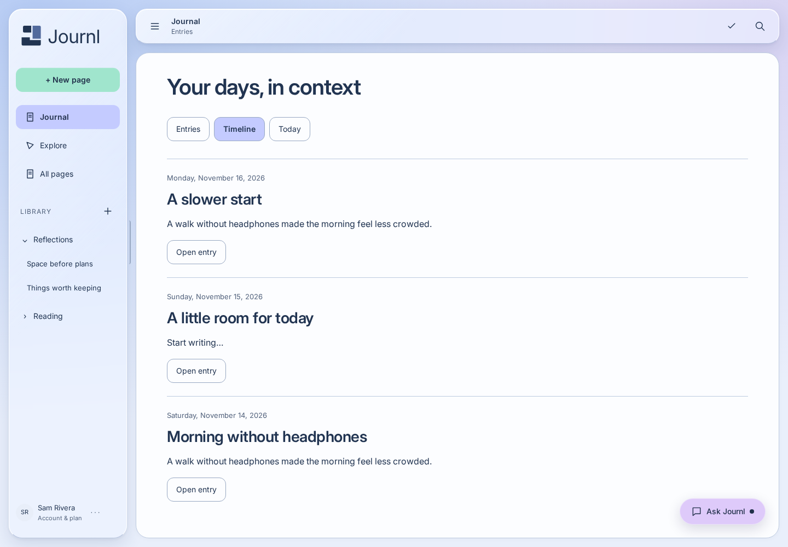
SHA256 0dc1752019cac595214a28b879dfd3812bdee87fd8194db366abb3af986aeec6

SHA256 7cc6143ebd06d42740fd8886b595ff08054eb6c96fd028aeaadfb7acce6438f9

SHA256 a78d3062f3d043405307cd7da697d1389c41c5dbbfbfd2897030111aea428937

SHA256 16de10368fe966522b139b28cfc806504414e6693c56447156258112e9c5a851

SHA256 946e158e56aca95bd20c6458919aecbb41997a0fa60d1ced276d3ad5a0decf51

SHA256 9125fc8869ef2ba7c4dafcd39c17d26b018846b44db07b32bc236c856781c92f

SHA256 15443b57904984288c5436cc77ac906bebcab7f50efc7d13d25769ea66c376a7

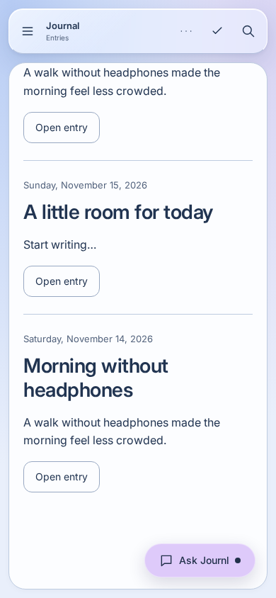
SHA256 5132fae090eac79b237c22b39e735cf74c10e8b7350fe9dc6f4c69e9c2d50299
Morning without headphones
dated-entryActions and implementation pointers
+ New page · Journal · Explore · All pages · ⌄ · Reflections · › · Reading · Entries · Timeline · Today · Turn into a page · Explore this note · Ask Journl · Today’s Journal · Close · Instant · Thinking
apps/web/src/app/(app)/journal/_components/journal-list.tsxapps/web/src/app/(app)/journal/_components/journal-entry-convert-to-page.tsx

SHA256 e9c45e98c379a5b58e21e5c3d0155cee85598a0c2833f8d09ff0f37f9f883f98

SHA256 346bc955628dbfa56095961ce48a8f73bafa499642077795b0e6eb2a1917e54f

SHA256 a454baec06ed1c3d80f45d1a002fcff9b4f68ac8ec2ce43e5633d859a130ba45

SHA256 3e604be4a513231dc5678074f551fe4d225dda898c2f6a5ee174d18e123b47bb
Journal history · loading
older-loadingActions and implementation pointers
+ New page · Journal · Explore · All pages · ⌄ · Reflections · › · Reading · Ask Journl · Today’s Journal · Close · Instant · Thinking
apps/web/src/app/(app)/journal/_components/journal-list.tsxapps/web/src/app/(app)/journal/_components/journal-entry-convert-to-page.tsx

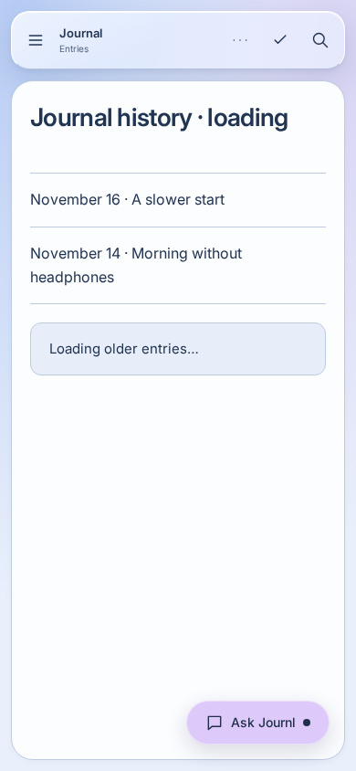
SHA256 d848f4105799d7d83483b01462631d391015a74f32f3d889bb9fb6996af8d12d

SHA256 2deaecad0e4eef59e4b77c7e12f6e9d9e6ed3b1aad4c2883a18475af67d17ff6

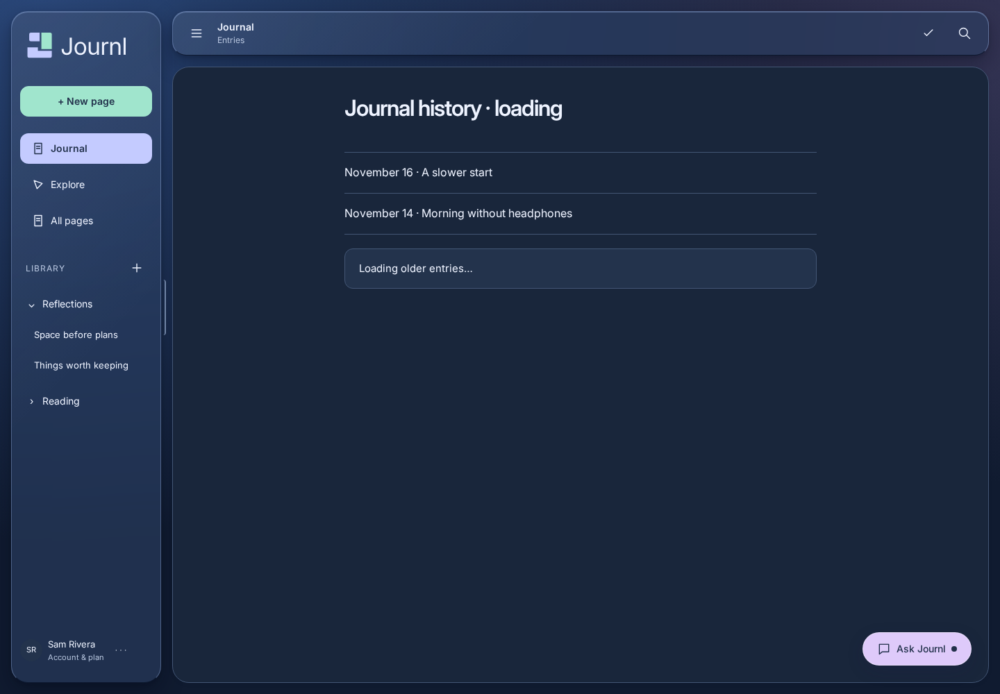
SHA256 2704b0d28479f1b6ac4c17d659d191ceda170b52757421bbd77242e79c096b15

SHA256 2ee6b03e75343d9aaa75efd78bdbfc1c363f617c0dda7bb66a9d98712410451c
Journal history · retry
older-retryActions and implementation pointers
+ New page · Journal · Explore · All pages · ⌄ · Reflections · › · Reading · Retry older entries · Ask Journl · Today’s Journal · Close · Instant · Thinking
apps/web/src/app/(app)/journal/_components/journal-list.tsxapps/web/src/app/(app)/journal/_components/journal-entry-convert-to-page.tsx

SHA256 5984f139291422bf5d92c493c2ca7fd2f0631b22b511a691c2b0d40715b1011d

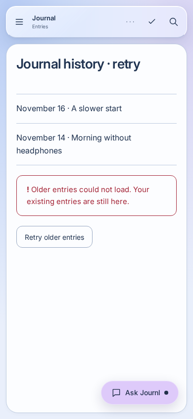
SHA256 46a8f86e6fb2bb5325fecdae14ff84da746dc92aff9b22a4cbb486392c599900

SHA256 fa7411e251c4430a3ebb1000e59eac158f7ceb96a8effc5f9c5d7edb0fd43ba1

SHA256 9c8de824936aa43ccbd93882032e71f3c70a36545f7d773c9182ae759c90b0c5
Journal history · end
older-endActions and implementation pointers
+ New page · Journal · Explore · All pages · ⌄ · Reflections · › · Reading · Ask Journl · Today’s Journal · Close · Instant · Thinking
apps/web/src/app/(app)/journal/_components/journal-list.tsxapps/web/src/app/(app)/journal/_components/journal-entry-convert-to-page.tsx

SHA256 42e70c5b0dffd3098d4610b50e3a6fb02817d8293932d4d29834c3876353be3b

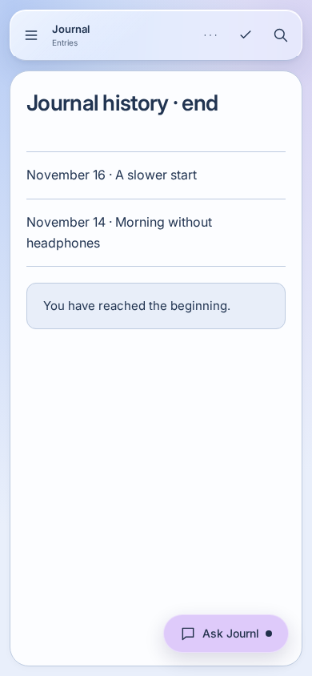
SHA256 0c2ad55db0b4b6cc84026517eb06a1998dbd5f606a1f922529156e8ebe832c01

SHA256 5c9ee97d7ed2730eb45b42e59bbbca3cf6af43e62690b10628d2d3ad89d2cb2e

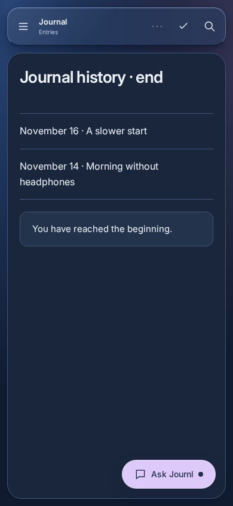
SHA256 c1c0ff1a1a675457d14710b1c4b39159c9d6c3cdf1b18056314932f5a66b2ed4
Journal history · unavailable
older-unavailableActions and implementation pointers
+ New page · Journal · Explore · All pages · ⌄ · Reflections · › · Reading · Ask Journl · Today’s Journal · Close · Instant · Thinking
apps/web/src/app/(app)/journal/_components/journal-list.tsxapps/web/src/app/(app)/journal/_components/journal-entry-convert-to-page.tsx

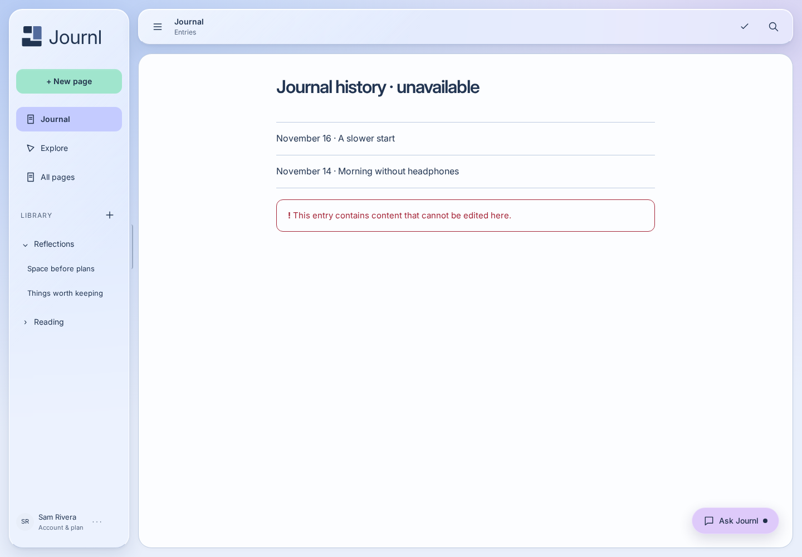
SHA256 847102ecc3ac5a270cab0fcf37b798af18ba6dde3c1f1f94c8c829397d7773ab

SHA256 b55241f975b40bbe59f8ce3c4df2d4c8f844a25e05064c406c076bbb1c598e9a

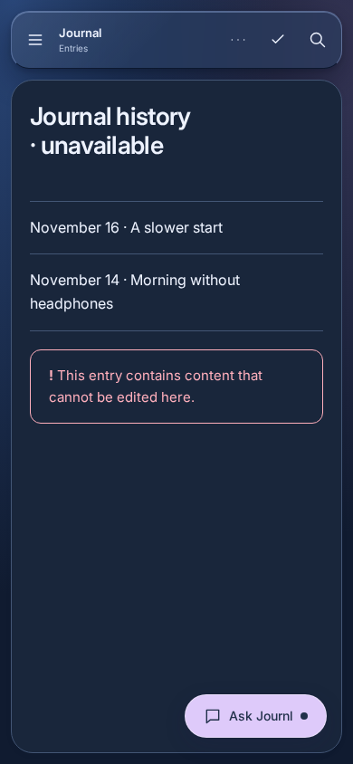
SHA256 474f45d2e52e95c524c917e2135612e46939b8ecd287c976ea0eccee9fd87fab

SHA256 006751aab190e546b2f9344deafa898f66b8ef9d68031ff9745e88d34e7268b4
Browse your Journal
date-historyActions and implementation pointers
× · Close · Open date
apps/web/src/app/(app)/journal/_components/journal-list.tsxapps/web/src/app/(app)/journal/_components/journal-entry-convert-to-page.tsx

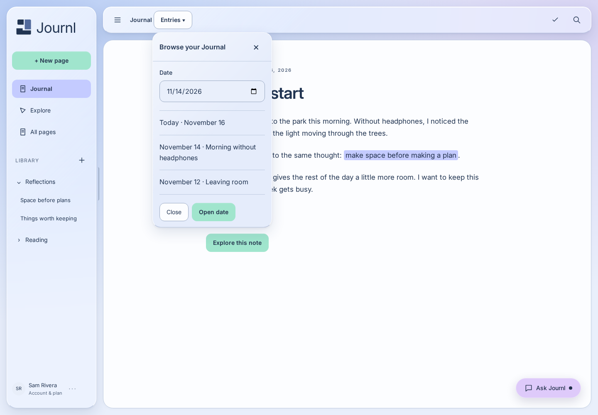
SHA256 ec305f5164781c94ba29910b359b3583384605a061b7e3fe965b9745e7d62c6f

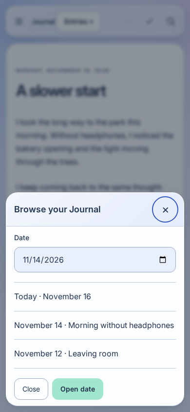
SHA256 784f679225986fa5dde463ae42c2fa782f9ae27c9c1f0cb68a86d7786d690362

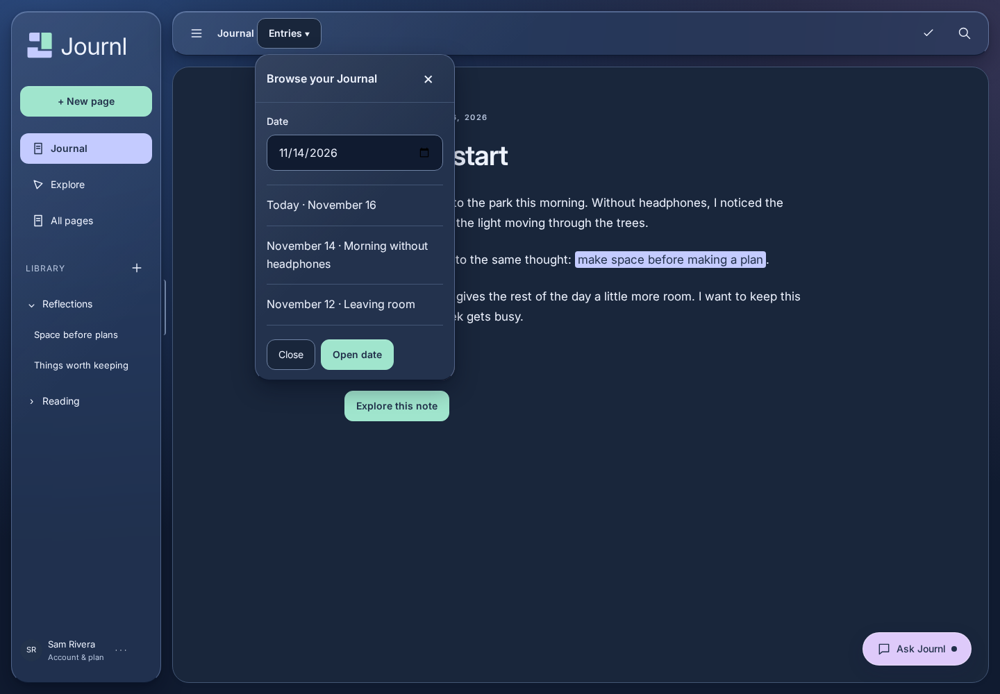
SHA256 291479622cf026735d7a3784cfc2146a519b3f9fb480786fe0677eea9f754169

SHA256 80e328a5fcef8add13a0467f50dc844ab8909942aeb669f09890eaa84e9fa10e
Journal display
journal-modesActions and implementation pointers
× · Entries — selected · Timeline
apps/web/src/app/(app)/journal/_components/journal-list.tsxapps/web/src/app/(app)/journal/_components/journal-entry-convert-to-page.tsx

SHA256 baa1a0f303665063940ac558107de654f77f59d942e111969d1043963551f0ac

SHA256 e2676ce5494e357977d4dd3cd4d1b21d59d881d8696a3b7ee10743cae91891d6

SHA256 8dc39b9704dffac234ac9268db3e7db225938b44571f4953bc64d655fed96786

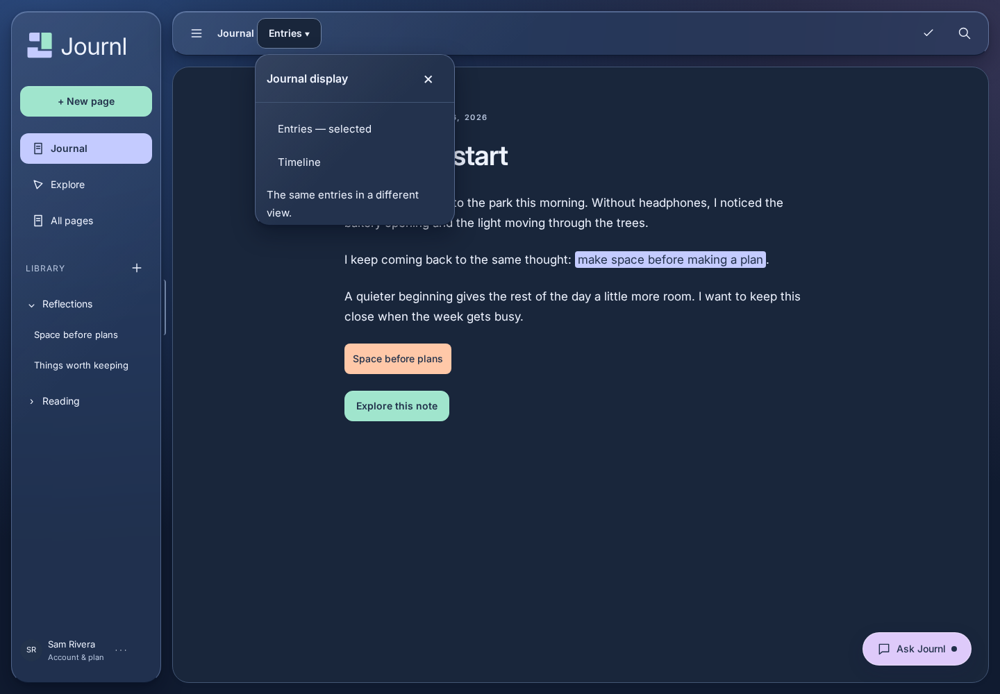
SHA256 03b802b6545bb094d4fddcf2b54cd3eeb65baf6fb9b9d40d47b5d746d89cb900

SHA256 2e9982cb18107552ced73e0402879610ea3dcc5e0857619ab09dd618949da3e6

SHA256 6ca4d0b504a2cec5b2bbb14c60da182800b0188a2a666aa0c431b53b6e952046